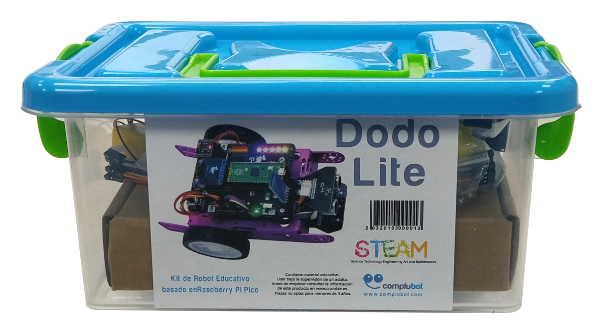
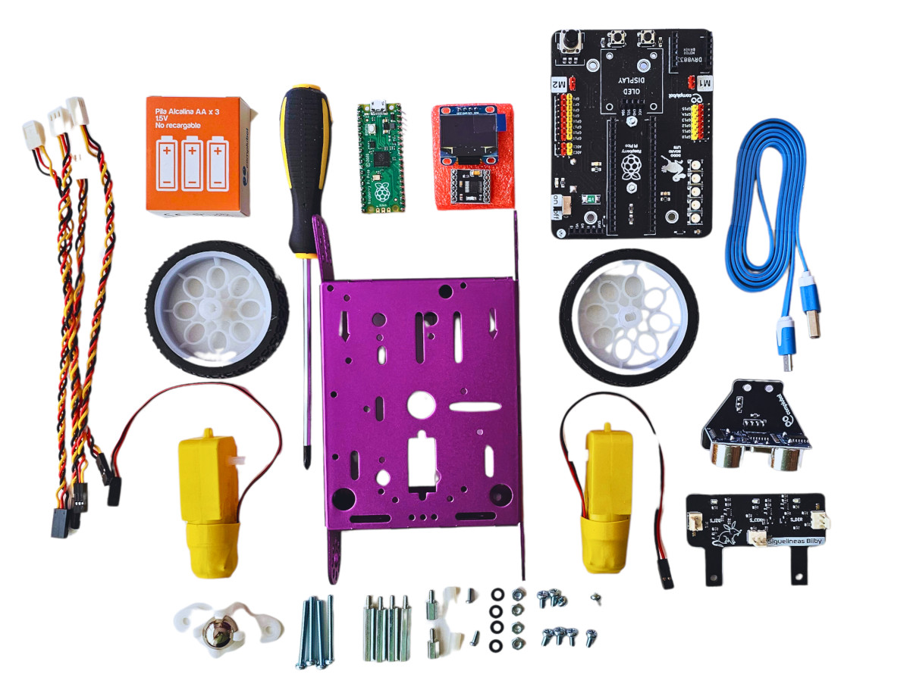
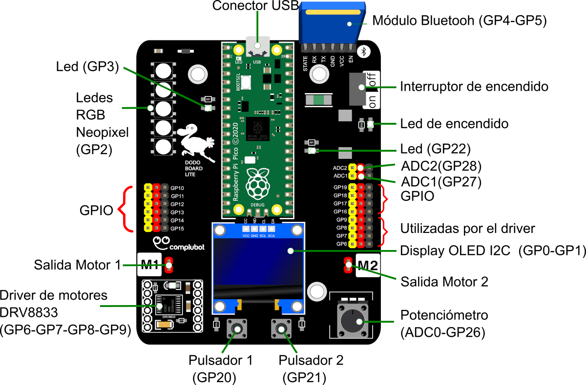
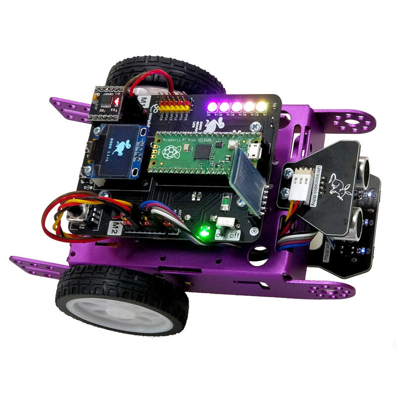

El robot DODO: components i funcionament general
El robot DODO és un robot educatiu dissenyat per facilitar l’aprenentatge de la robòtica i la programació aplicada. Es tracta d’un sistema complet que integra maquinari i programari, i que permet controlar motors, sensors i actuadors mitjançant codi escrit en MicroPython.

El robot està format per diversos blocs principals: una placa de control, una placa d’expansió (shield), diferents sensors, diversos actuadors i els elements mecànics que permeten el moviment.

Components del robot DODO
- Un xassís metàl·lic
- Una roda boja
- Dos motors de 140 rpm a 6 V
- Dues rodes motrius de 65 mm de diàmetre
- Una placa Dodo Lite
- Una placa controladora Raspberry Pi Pico
- Un display OLED gràfic de 128 × 64 píxels
- Un driver de control de motors DRV8833
- Un mòdul seguidor de línia de tres elements actius (Bilby)
- Un mòdul mesurador de distància per ultrasons (Bilby)
Cables de connexió
- 1 cable de connexió Molex–Header de 150 mm
- 3 cables de connexió Molex–Header de 200 mm
- Un cable micro USB
Eines i tornilleria
- Un tornavís PH1 (tots els cargols d’aquest kit tenen cap PH1)
- 8 cargols M3 × 6 mm amb cap bombat
- 4 cargols M3 × 30 mm amb cap bombat
- 2 cargols M2 × 6 mm amb cap bombat
- 4 femelles M3
- 2 separadors de niló (H–H) M2 × 12 mm
- 2 separadors metàl·lics (M–H) M3 × 8 mm
- 4 separadors (H– …)
Placa de control
El cervell del robot DODO és una Raspberry Pi Pico, un microcontrolador desenvolupat per la fundació Raspberry Pi. Aquesta placa és l’encarregada d’executar els programes escrits en MicroPython i de gestionar la comunicació amb la resta de components del robot.

La Raspberry Pi Pico disposa de:
- Un microcontrolador capaç d’executar codi de manera eficient
- Memòria integrada per emmagatzemar el programa
- Pins d’entrada i sortida per connectar sensors i actuador.
- Connexió USB per a la programació i l’alimentació
- En aquest projecte no treballarem directament amb els pins a baix nivell, ja que el control del maquinari es farà mitjançant una llibreria que simplifica aquesta tasca. Tot i així, és important entendre que la placa és l’element que coordina tot el funcionament del robot.
Shield o placa d’expansió
Connectada a la Raspberry Pi Pico, el robot DODO incorpora una placa d’expansió (shield) que facilita la connexió i el control dels diferents components. Aquesta placa actua com a intermediària entre el microcontrolador i els elements externs del robot.

La shield s’encarrega principalment de:
- Controlar els motors mitjançant circuits de potència adequats
- Simplificar la connexió dels sensors
- Gestionar l’alimentació dels diferents components
- Evitar connexions complexes o errors de cablejat

Sensors
Els sensors permeten al robot captar informació del seu entorn. A través d’ells, el robot pot detectar canvis i reaccionar en funció del que percep. El robot DODO disposa de diversos sensors que s’utilitzaran al llarg del projecte.
De manera general, els sensors permeten:
- Detectar obstacles o distàncies
- Llegir valors de l’entorn
- Obtenir informació necessària per prendre decisions
Cada sensor proporciona dades que el programa pot interpretar per modificar el comportament del robot. Més endavant es treballarà cada sensor de manera individual, tant des del punt de vista del maquinari com de la programació.
El robot DODO disposa dels sensors següents:
- Sensor de distància per ultrasons (Bilby): Permet mesurar la distància fins a un objecte situat davant del robot. S’utilitza habitualment per detectar obstacles i evitar col·lisions.
- Sensor seguidor de línia de tres elements actius (Bilby): Consta de tres sensors que detecten el contrast entre una línia i el fons. Permet implementar comportaments com el seguiment de línies o la detecció de trajectes.
- Potenciòmetre: És un sensor analògic que permet llegir un valor variable. Es pot utilitzar, per exemple, per ajustar velocitats, llindars o paràmetres del programa.
- Botons de control: Permeten detectar pulsacions de l’usuari. Es poden utilitzar per iniciar o aturar programes, canviar modes de funcionament o provar comportaments.
Actuadors
Els actuadors són els elements que permeten al robot executar accions físiques. A partir de les ordres programades, el robot pot moure’s, mostrar informació o generar respostes visuals.
Entre els actuadors del robot DODO hi trobem:
- Motors, que permeten el desplaçament del robot.
- LEDs o elements lluminosos, per mostrar estats o senyals
- Pantalla, per mostrar informació o missatges
Els actuadors transformen les decisions preses pel programa en accions visibles i mesurables, fet que permet comprovar immediatament si el codi funciona correctament.